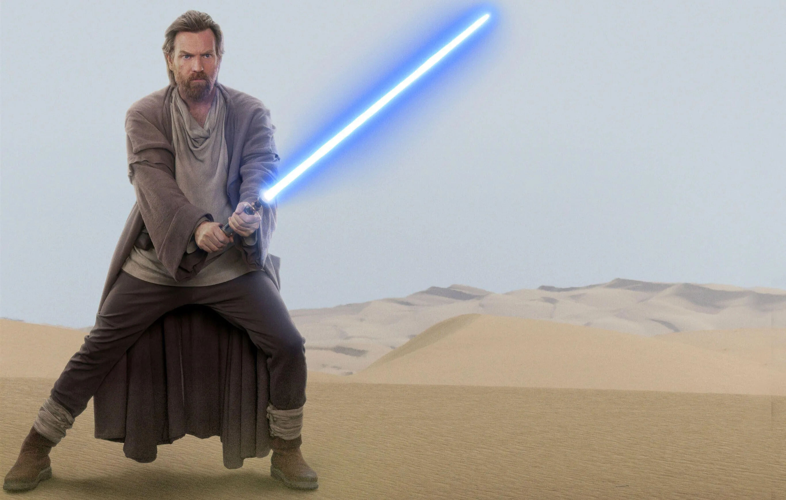
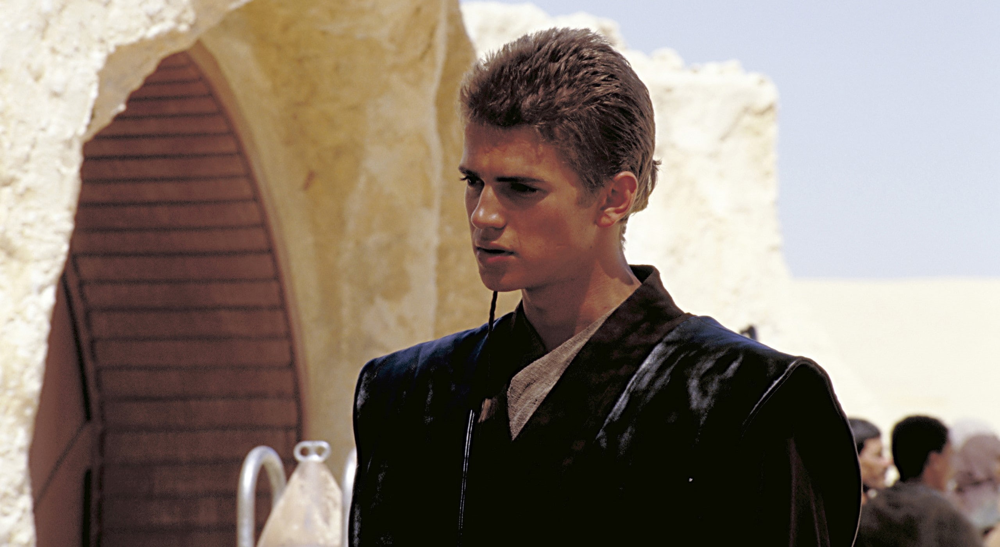
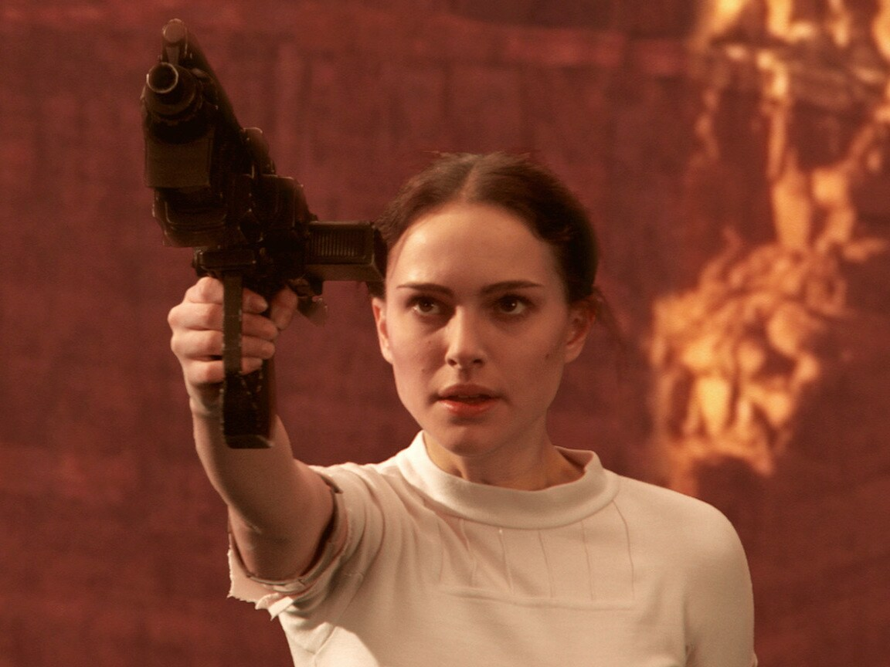
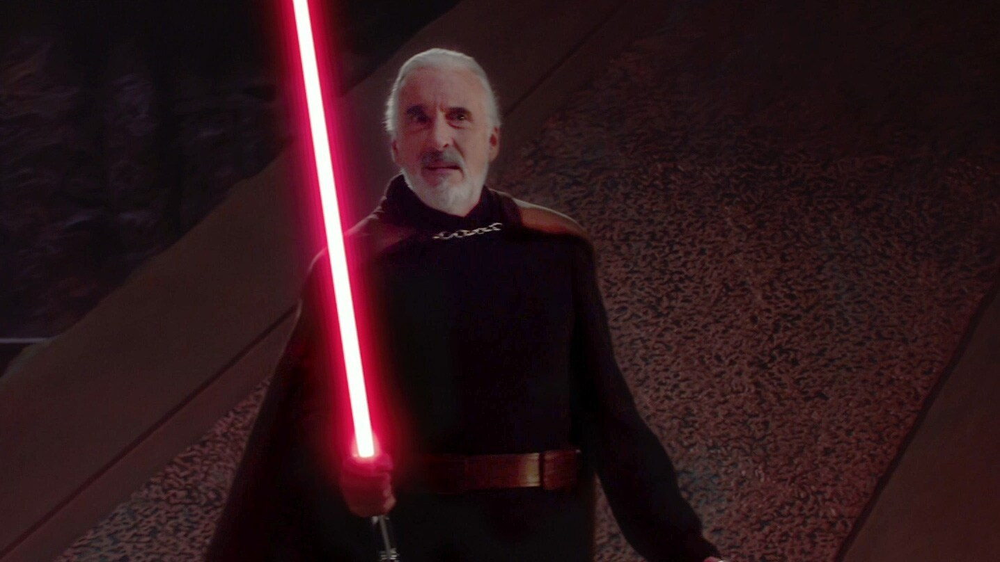
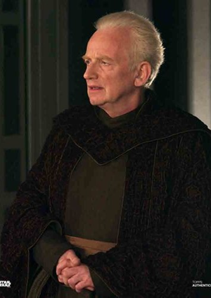
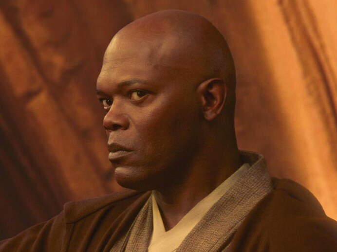
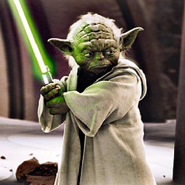
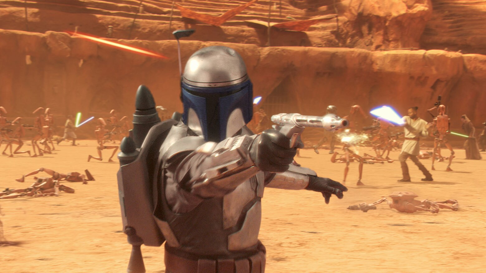

|  | Obi-Wan Kenobi: Anakin's Jedi Master, Obi-Wan is a skilled and wise warrior. He investigates a conspiracy and uncovers a secret clone army, becoming a key player in the events leading to the Clone Wars. |
|  | Anakin Skywalker: A young Jedi apprentice with immense potential and a strong connection to the Force. He is impulsive, passionate, and begins a romantic relationship with Padmé Amidala. |
|  | Padmé Amidala: A senator and former queen, Padmé is dedicated to maintaining peace in the Republic. She becomes entangled in a romance with Anakin while navigating political turmoil. |
|  | Count Dooku - Darth Tyranus: A former Jedi Master who has turned to the dark side, Dooku leads the separatist movement against the Republic. He becomes a Sith apprentice to Darth Sidious. |
|  | Chancellor Palpatine - Darth Sidious: The cunning and manipulative Sith Lord orchestrates events to further his power, ultimately leading to his rise as Emperor. |
|  | Mace Windu: A respected Jedi Master and member of the Jedi Council, Windu is dedicated to upholding the Jedi Code and protecting the Republic. |
|  | Yoda: The wise and revered Jedi Grand Master, Yoda provides guidance to the Jedi Order and senses the impending turmoil in the galaxy. |
|  | Jango Fett: A skilled bounty hunter chosen as the template for the clone army, he has a connection to the Sith and plays a role in their plans. |